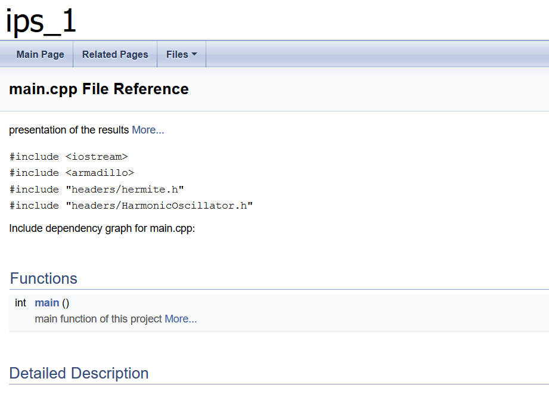
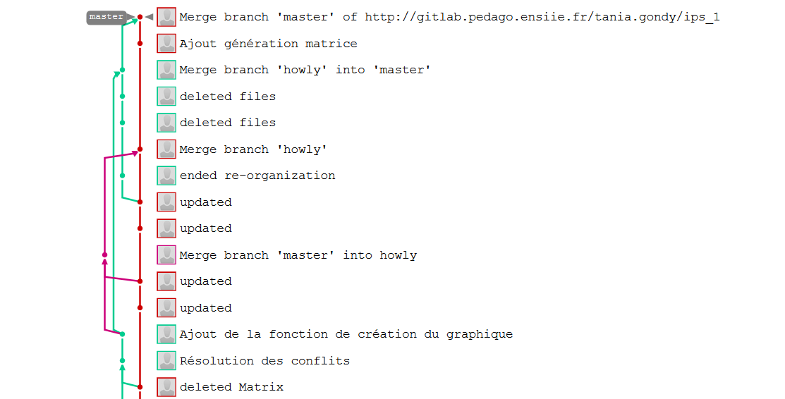

class: titlepage .title[ Présentation de projet - IPS-PROD ] .subtitle[ G. Bailleul, T. Gondy & R. Huguet - ENSIIE - 2019 ] .row[ Calcul et présentation de la densité locale d'un système nucléaire ] .footnote[ [:book:](./index.html) ] --- layout: true class: animated fadeIn middle numbers .footnote[ G. Bailleul, T. Gondy & R. Huguet - ENSIIE - 2019 - [:book:](./index.html) ] --- class: toc top # Sommaire 1. Structure du projet 2. Chaîne de compilation (Makefile) 3. Documentation générée 4. Quelques exemples de code 5. Test unitaire 6. Git (historique et messages) 7. Résultats obtenus 8. Conclusion --- # I. Structure du projet .tree.hcenter[ * **headers** * HarmonicOscillator.h * factorielle.h * hermite.h * hermite_nb_values.h * hermite_values.py * **html** * **latex** * **pres** * **src** * HarmonicOscillator.cpp * factorielle.cpp * hermite.cpp * plot.py * **tests** * AUTHORS.md * Doxyfile * README.md * ho_tests.cpp * main.cpp * makefile ] --- # II. Chaîne de compilation (Makefile) ## makefile ```makefile CXX=g++ CXXFLAGS=-Wall -Wextra EXEC=project all : $(EXEC) project : hermite.o HarmonicOscillator.o factorielle.o main.o $(CXX) -o project hermite.o HarmonicOscillator.o factorielle.o main.o ./$(EXEC) make clean mrproper hermite.o : src/hermite.cpp $(CXX) -o hermite.o -c src/hermite.cpp $(CXXFLAGS) HarmonicOscillator.o : src/HarmonicOscillator.cpp $(CXX) -o HarmonicOscillator.o -c src/HarmonicOscillator.cpp $(CXXFLAGS) factorielle.o : src/factorielle.cpp $(CXX) -o factorielle.o -c src/factorielle.cpp $(CXXFLAGS) main.o : main.cpp headers/hermite.h headers/HarmonicOscillator.h headers/factorielle.h $(CXX) -o main.o -c main.cpp $(CXXFLAGS) ho_test : HarmonicOscillator.o cxxtestgen --error-printer -o ho_tests.cpp tests/HarmonicOscillatorTest.h $(CXX) -o ho_tests ho_tests.cpp HarmonicOscillator.o ./ho_tests rm ho_tests* rm HarmonicOscillator.o tests : ho_test clean : rm -rf *.o mrproper : rm -rf $(EXEC) ``` --- # III. Documentation générée .hcenter[  </br> .hcenter[Site généré par Doxyfile] ] --- # IV. Quelques exemples de code ## main.cpp ```c /** * @brief main function of this project * * @param argc * @param argv * @return int */ int main() { /* values for the frequency of the oscillator, the particule's weight and the planck's constant */ double omega = 1.0; double weight = 1.0; // electron's weight double planck = 1.0; //(6.63e-64) / (2*M_PI) /* harmonic oscillator generation */ HarmonicOscillator ho(omega, weight, planck); /* number of points for the generation of the z vector */ int points = 2; /* we choose to look the values for z=-2 to z=2 */ arma::vec z = arma::linspace<arma::vec>(-1.0, 1.0, points); /* we choose also one value for n*/ int n = 2; /* solutions computation and printing */ arma::mat S = ho.solutions(z, n); S.raw_print(); return 0 ; } ``` --- # IV. Quelques exemples de code ## hermite.cpp ```c arma::mat hermite_values(arma::vec z, int n) { /* matrix initialisation */ arma::mat H = arma::mat(z.n_rows, n + 1); /* known values */ H.col(0).fill(1.0); H.col(1) = 2 * z; /* filling */ int i; unsigned int j; for (i = 2 ; i <= n ; i++) { for (j = 0 ; j < z.n_rows ; j++) { H.col(i).row(j) = compute_Hnz(i,j); } } return H; } ``` --- # V. Test unitaire ## HarmonicOscillatorTest.cpp ```c #include "../cxxtest-4.4/cxxtest/TestSuite.h" #include "math.h" #include <armadillo> #include "../headers/HarmonicOscillator.h" class HarmonicOscillatorTest : public CxxTest::TestSuite { public: void testComputation( void ) { double testing_value = 1e-5; /* harmonic oscillator declaration */ HarmonicOscillator ho(1.0, 1.0, 1.0); /* declaration of z and n */ int n = 2; arma::vec z = arma::linspace<arma::vec>(-1.0, 1.0, 2); arma::mat S = ho.solutions(z, n); TS_ASSERT( S.col(0).row(0) - 0.455581 < testing_value ); TS_ASSERT( S.col(1).row(0) -0.644288 < testing_value ); TS_ASSERT( S.col(2).row(0) -0.322144 < testing_value ); TS_ASSERT( S.col(0).row(1) - 0.455581 < testing_value ); TS_ASSERT( S.col(1).row(1) 0.644288 < testing_value ); TS_ASSERT( S.col(2).row(1) 0.322144 < testing_value ); } }; ``` --- # VI. Git (historique et messages) .hcenter[  </br> .hcenter[Arborescence du git] ] --- # VII. Résultats obtenus <pre id="terminal"> <span class="bold "></span><span class="green bold ">|</span><span class="green "></span><span class="green bg-reset ">howly@DESKTOP-LAV4DP9:/mnt/d/ENSIIE/ips_1</span><span class="green bg-reset bold ">| </span><span class="reset "></span><span class="reset bg-reset ">make project </span> g++ -o hermite.o -c src/hermite.cpp -Wall -Wextra g++ -o HarmonicOscillator.o -c src/HarmonicOscillator.cpp -Wall -Wextra g++ -o factorielle.o -c src/factorielle.cpp -Wall -Wextra g++ -o main.o -c main.cpp -Wall -Wextra g++ -o project hermite.o HarmonicOscillator.o factorielle.o main.o ./project 0.455581 -0.644288 -0.322144 0.455581 0.644288 0.322144 make clean mrproper make[1]: Entering directory '/mnt/d/ENSIIE/ips_1' rm -rf *.o rm -rf project make[1]: Leaving directory '/mnt/d/ENSIIE/ips_1' </pre> .hcenter[Résultat de l'exécution de 'make project'] </br> .hcenter[ `$$M=\left[\begin{array}{cc}0.455581&-0.644288&-0.322144\\0.455581&0.644288&0.322144\end{array}\right]$$` ] --- class: middle # VIII. Conclusion .alert.animated.fadeInLeft[ ## Difficultés rencontrées * Mauvaise gestion du temps * Difficulté à comprendre l'énoncé * Structuration du projet délicate ] </br> .block.animated.fadeInRight[ ## Compétences acquises * Découverte des outils * Apprentissage de la structuration d'un projet scientifique ]